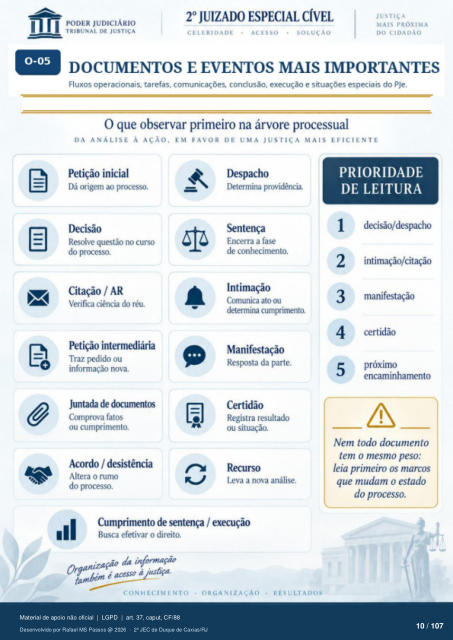

Transcrição automática em português, ainda não revisada. Confira grafia, prazos e termos jurídicos na imagem e no PDF antes de utilizar.
0-05 ¯O
DOCUMENTOS E EVENTOS MAIS IMPORTANTES
Fluxos operacionais, tarefas, comunicações. conclusão, execução e situações especiais do PJe. O que observar primeiro na árvore processual
DA ANÁLISE À AÇÃO. EM FAVOR DE UMA JUSTIÇA MAIS EFICIENTE
Petição inicial Dá origem ao pr(Resso.
Decisão Resolve questão no curso
do processo. Citação / AR
Verifica ciência do réu. Petição intermediária
Traz ou informação nova.
Juntada de document(S Comprova fatos
ou cumprimento. Acordo / desistência
Altera o rumo do processo.
Despacho I)etermina providência
Sentença Encerra a fase
de conhecimento. Intimação
Comunica ato ou determina cumprimento.
Manifestação Resposta da parte.
Registra resultado ou situação.
Recurso Leva a nova análise.
PRIORIDADE
DE LEITURA
2 3
4 5
decisão/despacho intimação/citação
manifestação certidão
próximo encaminhamento
Nem todo documento tem o mesmo peso:
leia primeiro os marcos que mudam o estado
do processo. Cumprimento de sentença / execução
Busca efetivar o direito. Organifaçfl'ufor:aco
CONHECIMENTO
• ORGANIZAÇÃO
RESULTADOS
Ver também o infográfico original (página 10)
